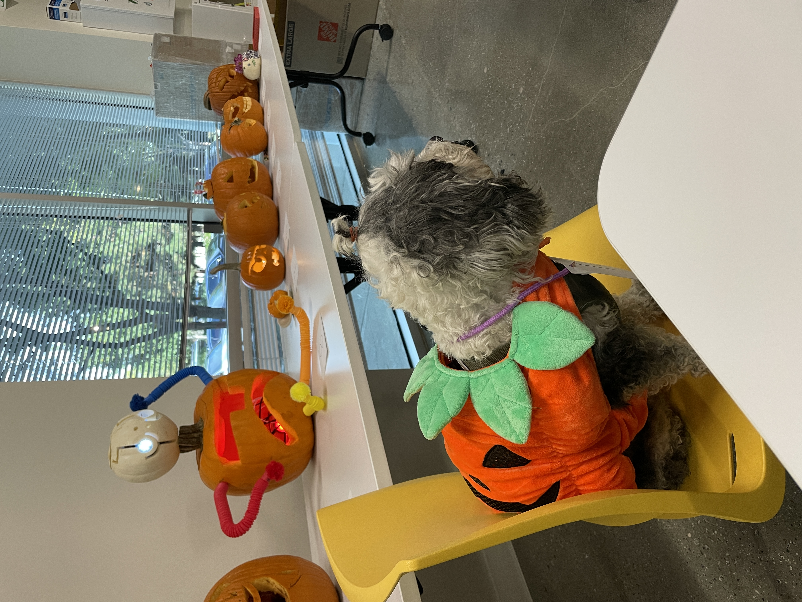
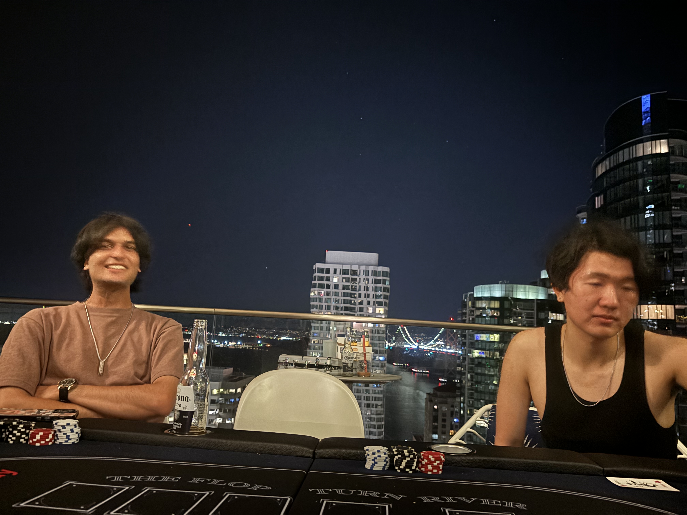
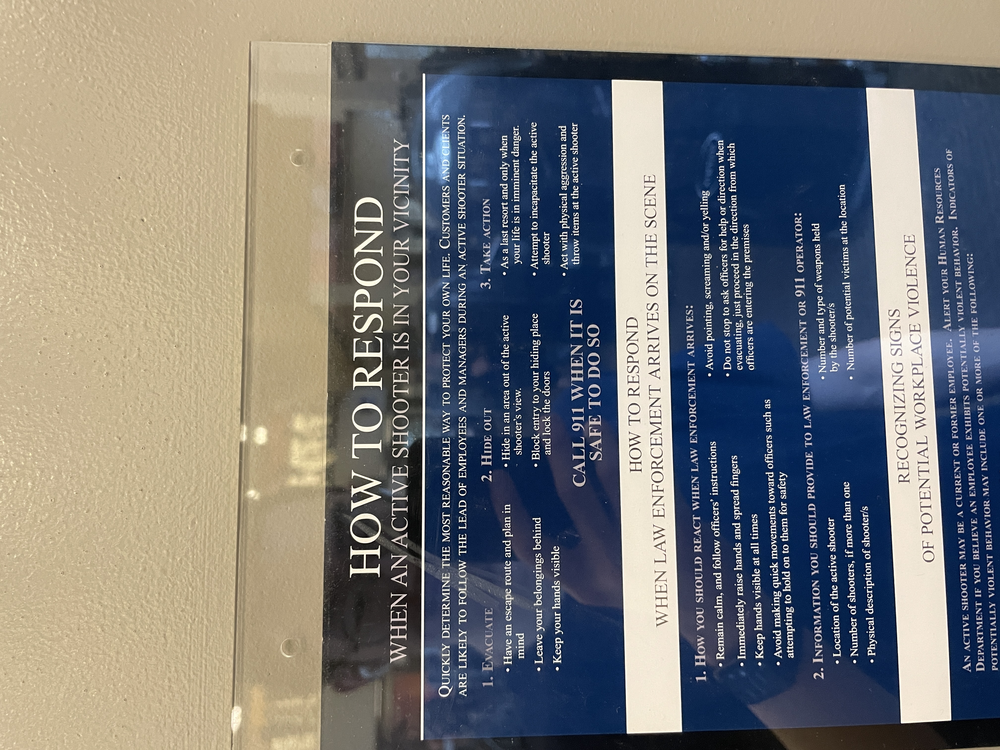
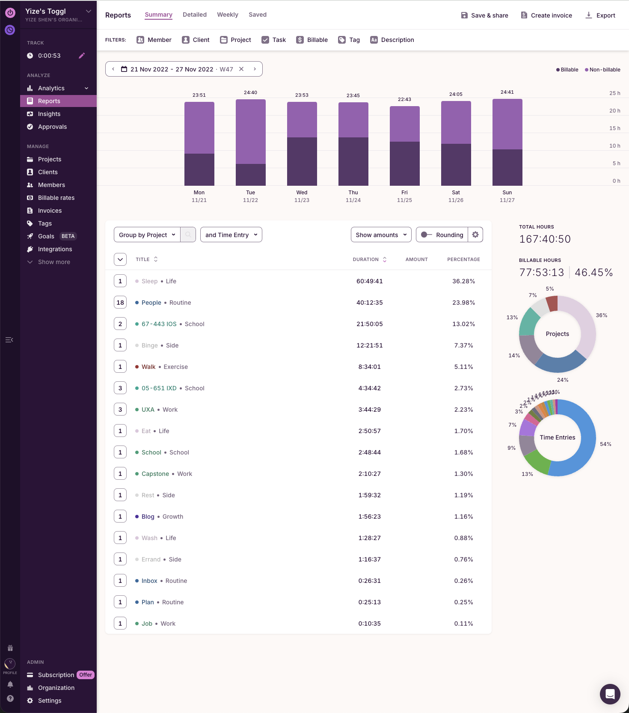

Ongoing Journey - November 2024
Embracing Podcast
So free we did a pumpkin carving contest this thanksgivingBc of internal arrangement the workload lessened first week. I started listening to podcast.
It was a random choice, my manager sits behind me so I can’t read or watch things on monitor,so listening to podcast became the best option to 摸鱼 (touch fish?)
It’s been nice. I’ve always been reluctant to listen to podcasts as I felt the information take ins are slow, but thinking now, it’s exactly because of the slow take in & the mono way of taking in informations (you can only gain context from listening) that made the learning much focused.
Dating
Poker ParticipantsJoined a poker night hosted by friends and one of the friend talked about the rough relationship with her boyfriend, how she is unsatified
…and I was honored with the task of finding her a new boyfriend
I asked what the requirements for hers are and she thought for a bit and said:
‘smart’
…
First felt weird cause the rough relationship she is in has nothing to do with counterpart been intellitually smart. It seems like the boy hardly cares about her, and she didn’t felt a sense of belonging while at the relatinship
But then the relization came that it’s not she want someone who is smart, but she think she is smart, and want someone just like her
…
I admire her honesty and confidence, reminded of what Weichen once said ‘the intersting thing about feedback is, it reflected more of the reader, and not the author’.
Brain Overloads
Tilly has this theory that time can be manually slowed down - when our brain is overloaded with information and new experiences.
The theory I agree, and I found it even more intersting how our actions are completely opposite based on the theory
Tilly chases for the overloaded moments and always try to find new and exciting things to experience.
I look more on the ‘not overloaded’ moment and tries to make these memoriable, what can I do constantly to make my life a little bit different.
It’s almost like floors and ceilings? Fasinating what made the difference
12/02 update - the break up blog explained it quit well, culture, mindest, how we measure growth, etc
Order & Priorities
Land of the free 🦅It was difficult working out the past few weeks, I never found the ideal time to head to the gym
I tried a few approaches, going there right before work, before lunch, after work and and after dinner. Surprsingly the before work one has been the longest and most sustainable.
I wonder how priorties matters in the order that you do it. Bc you do something eailer in the day, that thing became more important for you.
Instead of mind to action, action to mind?
Recording times, empathy
Crystal has been quite busy recently, she apoligized one day for not able to kept up the replies.
Quite the opposite, if anything I felt resonating to the situation she is in.
I started time tracking since 2021 and has kept on since, I went back to my junior year last week and looked at the enteries
This was 2022, week before Thanksgiving, I had almost 50% productive times that week, compare to barely 33% at this moment, 14 hours of difference…
Back then life was busy but productive. I remember fruiously taking notes in every class, craming in details, higlighting test worth materials, and rushing to next class within that 10 minutes break we got, while trying to schedule the next meeting for teammates before the deliverable ends.
And there were so much more worries back then, I think about the internship that I didn’t get, a relationship I try to obtain, wanting to meet more people all in the mean time keeping the current ones. I remembered one day I had only 10 minutes of replying people so I copy pasted ‘I saw it I am still alive’ to everyone that sent a message that day.
That was the most ‘?’ I’ve gotten since lol…
Anyhow less about me, just one appreciation towards the time that I tracked.
被记录的时间让我时至今日也能和遥远的那份自己共情，而这些恰好是金钱，时间，地位，通通买不到的
How do you wish to be seen
Tilly seems to be mad of me not wanting to be in her upcoming RED video, I felt a bit misunderstood.
It’s not that I don’t want to appear in tilly’s video, just, not at this very moment? If it make sense.
Just like Tilly having her theories, I have this theory that, admiration and respect everyone seeks for, so it’s more improtant on what people looks up to you for
Appearance and title seems to be the easiest, though I found some peresonal characters / internal strength much more attractive. The latter requires longer time to built and showcase, so I try to lay low until I can get these built.
The current issue is, as I am still building myself, I am quite hesistant to settle with the title of ‘tilly’s boyfriend’ (since that’s literally the only place people found me other than this blog, that a grand total of 2 people reads lol), which seems to have chased after me ever since, hence the reluctantcy to be in the video.
With time when I have more secure titles that others sees me for, I am more than happy to have other titles around. I just felt, tilly’s aura is too bright at this moment, and I simply wish to aid on the side, instead of stand with her in the middle.
And to tilly, despite my thought I completely support her on what she does. Chloe mentioned this X # called ‘built in public’, which resonate what Tilly does quite a bit. Tilly isn’t just showcasing her appearance or lifestyle, she is showcasing the journey she is going through. Perhaps it’s the nice outfit that attracted some today, and it will be her deep thoughts and personal drive towards career the year after.
Crystal talked with her friend and came up with this thought of ongoing journey, I think that’s exactly what Tilly is shooting for